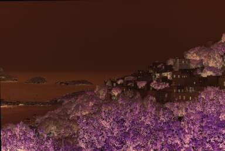
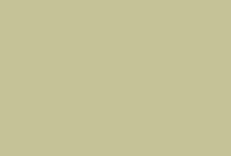
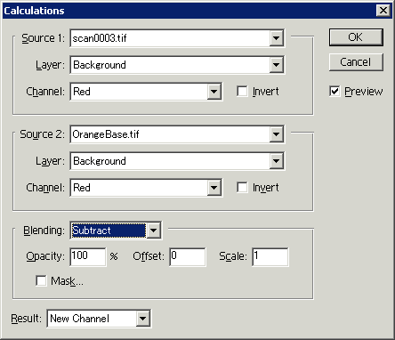
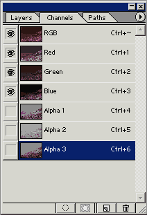
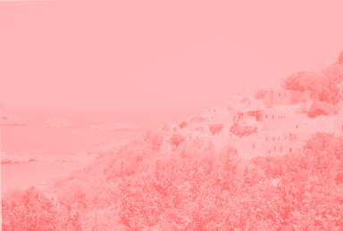
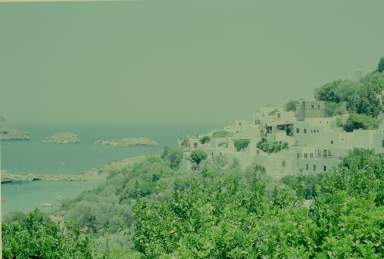
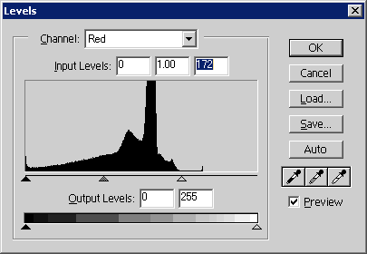
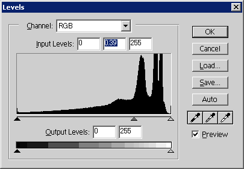

フィルムスキャナ考察 ： ネガフィルムの取り込み
Home > Software > ソフトウエア開発・サーバ管理のメモ帳 > このページ
Created on 2002/04, Last Update 2004/10/15
| 概要 スキャナドライバの設定 スキャン実例（晴天日） スキャン実例（曇天日・建物内） 手動でネガ反転処理 |
注意：このページは最終更新が2002年04月で、現在では利用できない情報の可能性があります。
ネガフィルムのRAWデータを手動で色調整するとどうなるか？ 利用した機材等は次のようなものです。
- イメージスキャナ ： MINOLTA Dimage Scan Dual II
- ドライバ ： vuescan
- 画像ソフト ： Photoshop
RAWデータとオレンジベース
必要なコマを「ポジ」モードでスキャンします。（RAWデータが出力されるものでは、それを使う）
また、何も映っていないフィルムの先頭などのオレンジ色の部分をスキャンして、これを「オレンジ・ベース」として保存します。
オレンジ・ベースは演算に使うので、全面一色が好ましいです。全ピクセルの平均値の色で「塗りつぶし」た画像とします。（スキャンしたオレンジ・ベースに何度かソフトネス・フィルタやモーション・ブロワ・フィルタなどをかけて均質化し、スポイド・ツールで平均的なピクセルを吸い取って、その色で塗りつぶした画像を演算用のオレンジ・ベースとする）

ネガ

オレンジ・ベース
演算「ネガ画像 － オレンジ・ベース」
Photoshop の 「イメージ(Image)」メニューの「演算(Calculations)」を実行します。

Source 1 に 「ネガ」、Source 2 に「オレンジ・ベース」を指定し、演算を「減算（Substract)」にします。
チャンネルの「赤(R)」、「緑(G)」、「青(B)」のそれぞれで、この演算を行います。
その結果は、アルファ・チャンネル３つにそれぞれ格納されます。

※ 重要
演算後、次の演算に移る前に、必ずアルファ・チャンネルの選択をはずしてください。これをしないと、アルファ・チャンネルに対してさらに演算処理すると言うばかばかしいことが起こります。（左端の目のマークをＲＧＢ側に移す）
不要なチャンネルの削除とアルファ・チャンネルの変換

アルファチャンネルを結合する前 (Multichannel)
３つのアルファ・チャンネル作成後、チャンネル・ウインドウで「赤(R)」、「緑(G)」、「青(B)」のチャンネルを削除します。（自動的に「RGB」という結合チャンネルも削除されます）
その後、「イメージ(Image)」メニューの「モード(Mode)」を「RGB Color」にすると、自動的にチャンネルが結合され通常の画像となります。

アルファチャンネル結合後 (RGB Color)
色の調整
ＲＧＢそれぞれの色を調整します。
まず、「イメージ(Image)」メニューの「調整(Adjust)」の「レベル補正(Level)」で、可視領域の一部分に偏って格納されているデータを、全体的になるように調整します。
具体的には、「チャンネル(Channel)」のＲ，Ｇ，Ｂそれぞれのヒストグラムを表示し、ヒストグラム値の「存在する」領域に入力ルーラー（黒三角や白三角のやつ）を持ってゆきます。

この結果、それなりの色の画像が出来上がります。が、かなり明るいです。（明るすぎます）
さらに、レベル調整で暗くしてみます。（下のように設定します）

レベル調整の段階ごとの画像。
最終的には、「汎用ドライバ vuescan」での取り込み結果とほぼ同レベルの結果が得られる。
RGBの調整
明るすぎるので、少し暗くしてみる
レベル調整で、Rを少し調整。一応完成

【比較用】汎用ドライバ vuescan の取り込み結果
試行錯誤の歴史（その他のネガ反転方法）
オレンジ・ベースを減算処理する方法を取る前は、
「イメージ(Image)」 - 「調整(Adjust)」 － 「反転(Invert)」を使って反転処理した画像をレベル調整していました。
ネガ・イメージを反転（invert) するとこの画像が得られる
それなりのレベル補正をするとこのようになる